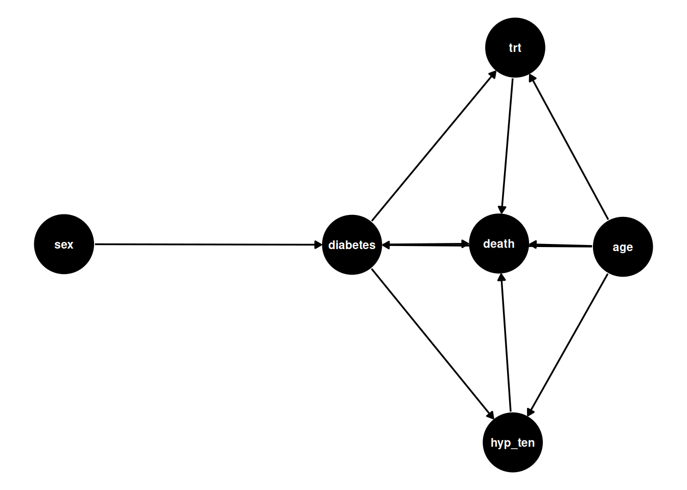
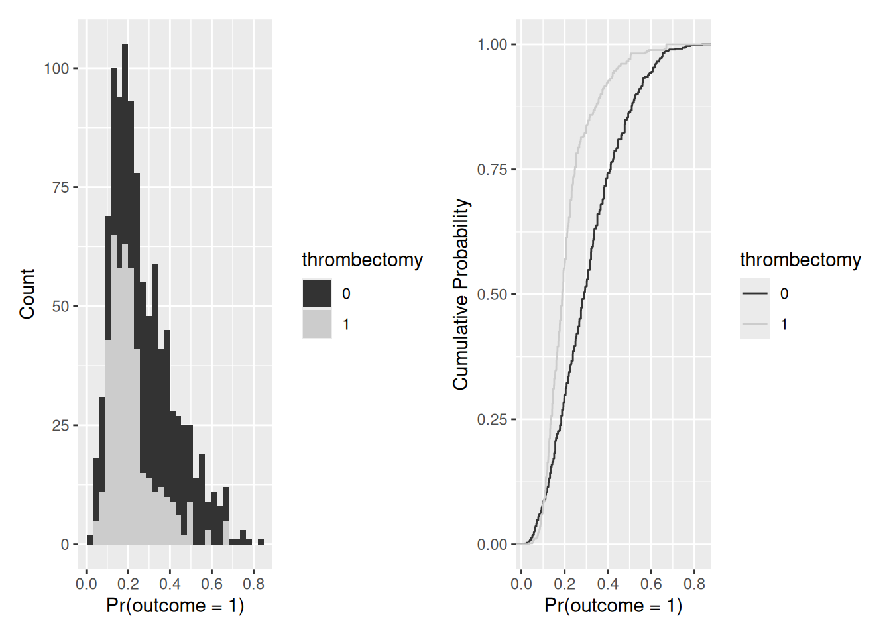
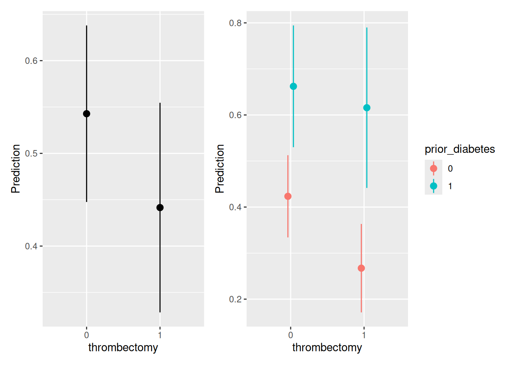
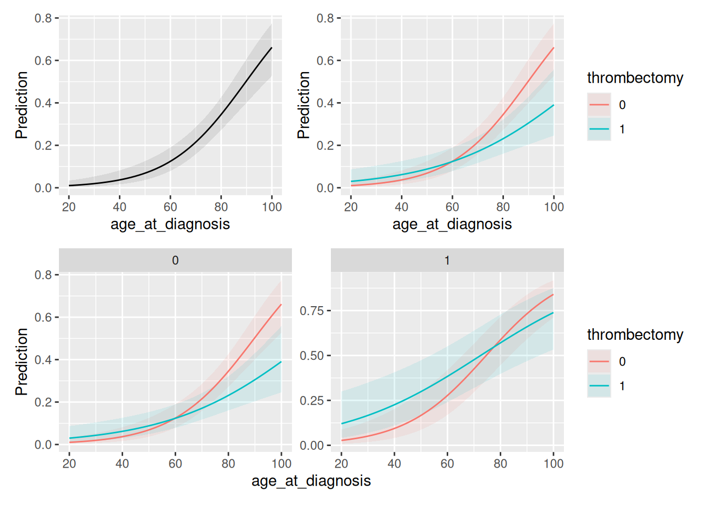
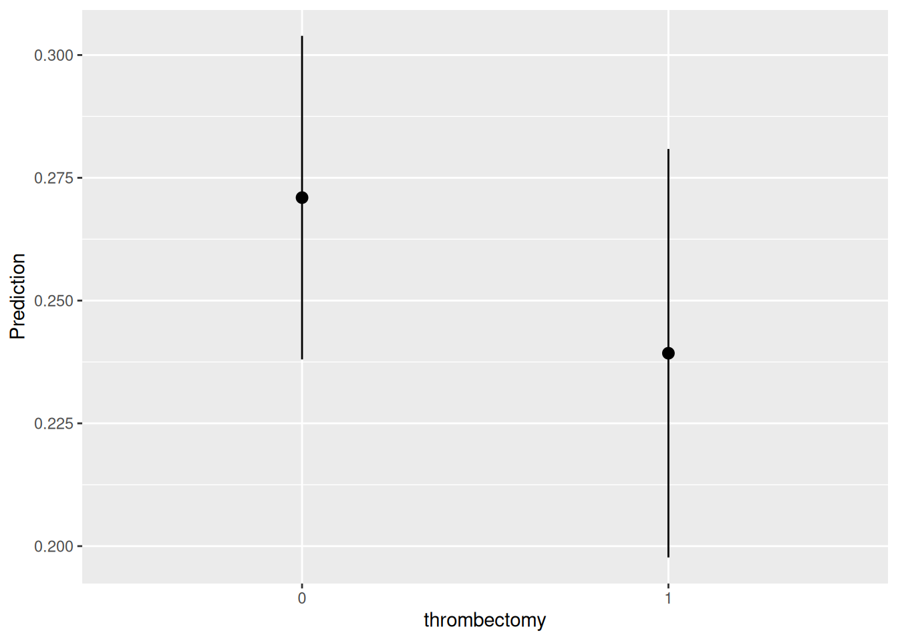

flowchart LR
A["1. Scientific question<br/><br/>What happens to P(Y)<br/>when X changes?"]
--> B["2. Regression estimate<br/><br/>log-odds"]
B --> C["3. Quantity to communicate<br/><br/>Probability"]
C --> D{"4. Who/where are we estimating the effect?"}
D --> D1["Particular patient"]
D --> D2["Clinically meaningful<br/>scenario"]
D --> D3["Average population"]
D --> D4["Different levels of<br/>an interacting variable"]
D1 --> E["5. Marginal effects"]
D2 --> E
D3 --> E
D4 --> E
E --> E1["avg_slopes(model)"]
E --> E2["slopes(model, ...)"]
E --> E3["avg_comparisons(model, ...)"]
E1 --> F["6. Communicate in<br/>clinically meaningful units"]
E2 --> F
E3 --> F
F --> G["1.8 percentage-point increase<br/>in predicted probability"]
style A fill:#E8F1FB,stroke:#3B6EA5,stroke-width:2px
style B fill:#F3F3F3,stroke:#666,stroke-width:2px
style C fill:#E8F5E9,stroke:#4C8C4A,stroke-width:2px
style D fill:#FFF4D6,stroke:#C79A24,stroke-width:2px
style E fill:#EDE7F6,stroke:#7656A6,stroke-width:2px
style F fill:#E8F5E9,stroke:#4C8C4A,stroke-width:2px
style G fill:#DDF3E0,stroke:#3D8B40,stroke-width:3px
15 Marginalizing the problem
Warning
🚧 This section is being actively worked on. 🚧
15.1 Pree-class Literature
- Marginal effects chatpter 3
-
Marginal effects chatpter 5
- You can skip section 5.4 Uncertainty and 5.5 Test
15.2 Slides
NoteTeacher note
The slides contain speaking notes that you can view by pressing ‘S’ on the keyboard.
15.3 Case session 15: “If you’re already dead, your odds of dying don’t increase.”
At a PhaRmaceutic RStudio AS, a new compound is being evaluated for toxicity before it can move further through development. In an early preclinical experiment, groups of laboratory animals are exposed to increasing doses of the compound, and investigators record how many animals die at each dose.
At the weekly safety meeting, the lead researcher summarizes the results:
“As the dose increases, mortality increases.”
One colleague looks at the highest-dose groups and asks:
“But if almost all the animals are already dead, can another increase in dose really have the same effect?”
The team looks more closely at the data. Mortality increases rapidly through the middle of the dose range, but begins to level off at high doses.
The investigators fit a logistic regression model because the outcome is binary: each animal either died or survived. The model produces a coefficient for dose.
“A one-unit increase in dose increases mortality by 8.7,” the lead researcher says.
The biostatistician stops them.
“The coefficient is on the log-odds scale. That’s not a change in probability.”
The team now faces a more useful question:
- How does increasing dose change the probability of death?
And because the dose-response relationship is nonlinear, another question follows:
- At what dose are we asking about the effect?
Your task is to investigate the dose-response relationship using a quadratic logistic regression model. You will move from regression coefficients to predicted probabilities and marginal slopes, examining how the effect of dose changes across the dose range.
15.4 Reading Task: Communicating results of regression models
The following text was synthesized from (1) Chapter 2 and adjusted to the topic of the lecture.
A fitted statistical model produces coefficients, but these coefficients are not necessarily the quantities we are scientifically interested in. The estimand is the quantity that answers the research question—the thing we actually want to learn about. A model coefficient, by contrast, is simply a statistical quantity used to represent patterns in the data. It is an abstract output of the model, not medical or clinical information in itself.
For example, a logistic regression produces coefficients on the log-odds scale. Although this may be useful for fitting the model, a log-odds coefficient is often difficult to interpret in practical or clinical terms. It does not directly tell us how a patient’s probability of an outcome changes.
Even probabilities, which are much more familiar, can be surprisingly difficult to interpret. People do not always reason about probabilities intuitively, and research in psychology and behavioral economics has documented many ways in which our judgments about probabilities can be misleading.
This raises an important question: if simple probabilities can be difficult to understand, why make our results even harder to interpret by focusing on quantities such as odds ratios or other model coefficients? The problem becomes even greater with more complicated models involving nonlinear relationships, interactions, random effects, Bayesian models, or machine-learning methods.
The key point is that the model coefficient should usually not be the end of the analysis. We should start with the scientific question and the estimand we want to learn about, and then use the statistical model as a tool for estimating that quantity. When the raw model coefficients are difficult to interpret, we can transform the model results into quantities that are easier to understand and that directly address the research question.
For example, rather than reporting only a logistic regression coefficient or odds ratio, we might report predicted probabilities for clinically meaningful values of the predictors and compare those probabilities. The model is then doing what it is meant to do: providing a statistical representation of the data that helps us learn about a scientifically meaningful quantity.
15.5 Discussion exercise: “What do we actually want to know?”
An observational study retrospecively investigates whether a new treatment reduces the risk of a complication after surgery. The researchers fit a logistic regression model and obtain \(β_1\) (odds ratio) is 0.65 for treatment vs. control.
Discuss with our neighbor:
What is the scientific question? What would you actually want to know about the treatment?
What is the model giving us? What exactly is the odds ratio of 0.65? Is it itself a clinical outcome or something else?
What would be easier to interpret? Imagine the complication occurs in 20% of patients in the control group. What kind of result would you rather show a clinician or patient: the odds ratio, a risk/probability, an absolute risk difference, or something else? Why?
What is the estimand? Try to state, in one sentence, the quantity you would ideally like to learn about.
If the model coefficient is not the scientific answer, what role does the model play?
15.6 The danger of coefficients
Warning
In nonlinear models, you cannot generally interpret the regression coefficient as the change in probability.
Important
The purpose of marginaleffects is essentially to help us make this translation: From a fitted generalized model → to quantities that answer the scientific question.
15.7 Marginalizing the problem - our workflow:
Throughout this session, we’ll use this workflow:
- What is my scientific question — the estimand?
- Choose machinery to model data — the estimator?
- What did the regression estimate — the coefficient?
- What quantity do I actually want to communicate?
- At what values?
- A particular patient?
- A clinically meaningful scenario?
- The average population?
- Different levels of an interacting variable?
- Post-model transformations — the estimate
- Communicate in clinically meaningful units
As shown in Figure 15.1, we move from the scientific question, through the model scale, to a marginal effect on the probability scale.
15.8 5 scientific questions
Does the population who got thrombectory have lower probability of death at 1-year follow-up after stroke?
What is the effect of thrombectory in older adults with diabetes, compared to older adults without diabetes?
What would be the average probability of death, had all participants received thrombectomy, compared to not receiving it.
How does
[RISK FACTOR]affect the probability of[DISEASE/OUTCOME]?
15.8.1 Context
- Population:
[POPULATION] - Risk factor:
[X] - Outcome:
[Y] - Relevant clinical context:
[CONTEXT] - Dataset/source:
[DATA SOURCE]
If a patient’s
[RISK FACTOR]increases by[X UNITS], how much does their probability of disease increase?
15.9 The estimand
We are interested in the probability of death at 1-year follow-up:
\[ P(death = 1 | X) \]
for an observational study looking at the effect of thrombectomy after stroke:

Here, age is confounding the effect of smoking on death (specifically, it’s a fork). Therefore, we need to adjust for age.
15.10 The estimator
\[ y_i = Binomial(n,p_i) \\ logit(p_i) = α + βx_i \] where n is the number of observations and p is the probability of death.
The logit function is defined as the log-odds:
\[ logit(p_i) = log(\frac{p_i}{1 - p_i}) \]
The “odds” of an event is just the probability it happens divided by the probability it does not happen. In other words:
\[ log(\frac{p_i}{1 - p_i}) = α + βx_i \] To figure out the definition of p_i, we do some algebra to solve for \(p_i\):
\[ p_i = \frac{exp( α + βx_i)}{1 + exp(α + βx_i)} \] The above function is the logistic
- Note that the log-odds space is linear (what we model)
- The logistic space is the sigmoidal shape (the transformation)
15.10.1 The statistical models
We want to adjust for competing predictors of death and potential counfounders in our model.
\[ logit( \text{death at 1 year followup}) = α + β1_{thrombectomy} + β2_{diabites} + β3_{age} \\ + β4_{hypertention} + β5_{sex} + β6_{thrombectomy×diabites} \\ + β7_{thrombectomy×age} + β8_{thrombectomy×hyptertension} + β9_{thrombectomy×sex} \\ \]
We implement this model in R using glm():
thrombectomy <- medisr::thrombectomy |>
mutate(death_1year_followup = if_else(time_to_death < 365 & death ==1,1,0),
age_at_diagnosis = as.numeric(age_at_diagnosis)
)
th_model <- glm(
death_1year_followup ~ thrombectomy +
prior_diabetes +
age_at_diagnosis +
prior_hypertention +
sex +
thrombectomy:prior_diabetes +
thrombectomy:age_at_diagnosis +
thrombectomy:prior_hypertention +
thrombectomy:sex,
family = binomial(link = "logit"),
data = thrombectomy
)Here’s the model output:
th_model |>
parameters::parameters(exponentiate=TRUE)# A tibble: 10 × 9
Parameter Coefficient SE CI CI_low CI_high z df_error
<chr> <dbl> <dbl> <dbl> <dbl> <dbl> <dbl> <dbl>
1 (Intercept) 0.00182 1.55e-3 0.95 3.25e-4 9.18e-3 -7.41 Inf
2 thrombecto… 9.06 1.03e+1 0.95 9.82e-1 8.49e+1 1.94 Inf
3 prior_diab… 2.70 7.43e-1 0.95 1.57e+0 4.64e+0 3.60 Inf
4 age_at_dia… 1.07 1.10e-2 0.95 1.05e+0 1.09e+0 6.34 Inf
5 prior_hype… 1.48 2.99e-1 0.95 9.94e-1 2.20e+0 1.92 Inf
6 sex 1.04 2.09e-1 0.95 7.02e-1 1.54e+0 0.196 Inf
7 thrombecto… 1.64 7.60e-1 0.95 6.57e-1 4.08e+0 1.06 Inf
8 thrombecto… 0.973 1.39e-2 0.95 9.46e-1 1.00e+0 -1.93 Inf
9 thrombecto… 0.428 1.41e-1 0.95 2.23e-1 8.12e-1 -2.58 Inf
10 thrombecto… 1.34 4.32e-1 0.95 7.14e-1 2.53e+0 0.908 Inf
# ℹ 1 more variable: p <dbl>15.11 Coefficient to quantity of interest
Recall Section 13.10 where we learned how to plug in numbers from a fitted regression in order to fit expectations or predictions of specific patients profiles in the dataset.
We will do this again - but this time, we’re fitting a POisson regression
b = coef(th_model)
b (Intercept) thrombectomy
-6.30743079 2.20414044
prior_diabetes age_at_diagnosis
0.99219918 0.06548817
prior_hypertention sex
0.38930725 0.03936706
thrombectomy:prior_diabetes thrombectomy:age_at_diagnosis
0.49240096 -0.02760921
thrombectomy:prior_hypertention thrombectomy:sex
-0.84966243 0.29304514 linpred_treatment_diabetes_50yo_female = b[1] + b[2] * 1 + b[3] * 1 + b[4] * 50 + b[5] * 0 + b[6] * 0 + b[7] * 1 + b[8] * 0 + b[9] * 0
linpred_treatment_diabetes_50yo_female |> unname()[1] 0.6557182b[1] * 1 # intercept b[2] * 1 # thrombectomy = 1 b[3] * 1 # diabetes = 1 b[4] * 50 # age = 50 b[5] * 0 # hypertension = 0 b[6] * 0 # female = 0 b[7] * 1 # thrombectomy * diabetes = 11 b[8] 0 # thrombectomy * hypertension = 10 b[9] 0 # thrombectomy * sex = 1*0
The other will be
linpred_no_treatment_diabetes_40yo_male = b[1] + b[2] * 0 + b[3] * 1 + b[4] * 40 + b[5] * 0 + b[6] * 1 + b[7] * 0 + b[8] * 0 + b[9] * 0
linpred_no_treatment_diabetes_40yo_male |> unname()[1] -2.656338b[1] * 1 # intercept b[2] * 0 # thrombectomy = 0 b[3] * 1 # diabetes = 1 b[4] * 40 # age = 40 b[5] * 0 # hypertension = 0 b[6] * 1 # male = 1 b[7] * 0 # thrombectomy * diabetes = 0 b[8] * 0 # thrombectomy * hypertension = 0 b[9] * 0 # thrombectomy * sex = 0
But we’re still in log-odds space. Let’s convert
The letter g represents the standard logistic function
\[ g(x) = \frac{1}{1 + e^{-x}} \]
Applying this function ensures that the linear component inside the parentheses of Equation 5.1 gets rescaled to the interval in order to respect the natural (probability) scale of the binary outcome.
In R, we can make a function to do this for us:
[1] 0.6582979g(linpred_no_treatment_diabetes_40yo_male)[1] 0.06559945# A tibble: 2 × 5
thrombectomy prior_diabetes age_at_diagnosis prior_hypertention sex
<dbl> <dbl> <dbl> <dbl> <dbl>
1 1 1 50 0 0
2 0 1 40 0 1Now, the marginaleffects function predictions() can take care of all this for us:
library(marginaleffects)
predictions(th_model, newdata = grid, type = "link")
Estimate Std. Error z Pr(>|z|) S 2.5 % 97.5 %
-0.725 0.470 -1.54 0.123 3.0 -1.65 0.196
-2.656 0.445 -5.97 <0.001 28.7 -3.53 -1.784
Type: linkIf we don’t specify type = "link", the default value is type = "response", which has already transformed the log-odds to probability (or log-ratio to count, was the model poisson regression):
predictions(th_model, newdata = grid)
Estimate Pr(>|z|) S 2.5 % 97.5 %
0.3263 0.123 3.0 0.1617 0.549
0.0656 <0.001 28.7 0.0285 0.144
Type: invlink(link)15.12 Step 4: What quantity do I actually want to communicate
In this case, we’re interested in probability of death.
15.12.1 Clear communication
Suppose:
OR = 1.50
What does this mean?
A 1-unit increase in age is associated with a 50% increase in the odds of cardiovascular disease, holding the other variables constant.
But the more important question is:
Does this mean that a 1-year increase in age increases the probability of disease by 50 percentage points?
No.
An odds ratio describes a change in odds, not directly a change in probability.
15.12.2 Why the odds ratio is not enough
The clinical question is usually about risk/probability, not odds.
Consider two patients:
- Patient A has a predicted disease probability of 5%.
- Patient B has a predicted disease probability of 50%.
Suppose both experience the same change in the predictor.
The resulting change in probability will not necessarily be the same.
This is the key complication of logistic regression:
The effect of X on probability depends on where you start.
The relationship between X and probability is nonlinear.
The logistic curve is relatively flat near 0 and 1, and steepest in the middle.
Therefore:
There is not necessarily one single “effect of X” on probability.
# the effect of 1 year age point slope for old?
# No slope increase - already high probability of death?15.13 Step 5: At what values?
- A particular patient?
- A clinically meaningful scenario?
- The average population?
- Different levels of an interacting variable?
Here, we tackle one scientific question at a time in order to address these questions:
15.13.1 Our sample
If we don’t supply a newdata grid, the predictions() function will take all participants in our sample and compute predictions for them, one by one:
p = predictions(th_model)
p
Estimate Pr(>|z|) S 2.5 % 97.5 %
0.2677 <0.001 28.9 0.2083 0.337
0.0706 <0.001 40.2 0.0361 0.133
0.3220 <0.001 19.9 0.2606 0.390
0.1979 <0.001 36.8 0.1417 0.269
0.1275 <0.001 40.1 0.0794 0.198
--- 1013 rows omitted. See ?print.marginaleffects ---
0.4588 0.683 0.6 0.2776 0.652
0.6696 0.102 3.3 0.4651 0.825
0.3413 0.137 2.9 0.1788 0.552
0.4494 0.617 0.7 0.2694 0.644
0.6611 0.118 3.1 0.4575 0.819
Type: invlink(link)You can see that the row length is the same as the original dataset:
A table with 1023 rows is not super intuitive and nice to make inference from. Why can we do about that?
We could either
- Make a plot to illustrate it all visually, or
- take the average of all these predictions
Keeping all information
Let’s start by the first approach and visualize all information:
library(patchwork)
p = predictions(th_model)
# Histogram
p1 = ggplot(p) +
geom_histogram(aes(estimate, fill = factor(thrombectomy))) +
labs(x = "Pr(outcome = 1)", y = "Count", fill = "thrombectomy") +
scale_fill_grey()
# Empirical Cumulative Distribution Function
p2 = ggplot(p) +
stat_ecdf(aes(estimate, colour = factor(thrombectomy))) +
labs(x = "Pr(outcome = 1)",
y = "Cumulative Probability",
colour = "thrombectomy") +
scale_colour_grey()
# Combined plots
p1 + p2`stat_bin()` using `bins = 30`. Pick better value `binwidth`.
The plot to the left shows the histogram. I suddenly becomes clear that fewer patients received thrombectomy than patients who did not.
Indeed, that is correct:
table(thrombectomy$thrombectomy)
0 1
583 440 about 0.4301075 received thrombectomy.
From the right plot, we can see the cumulative density plot. Here, it seems that overall…
Marginalizing over the predictions
We can compute the average for them by using avg_predictions()
avg_predictions(th_model)
Estimate Std. Error z Pr(>|z|) S 2.5 % 97.5 %
0.267 0.013 20.5 <0.001 307.1 0.241 0.292
Type: responseSo the average probability of death at the 1-year follow-up is 26.7%.
This is a reasonable estimate for answering the question
“how many Danes die at 1-year follow-up after stroke?”
However, as we now know that the groups are unbalanced, this is not a good estimate for the treatment effect! And it doesn’t have the granularity to address more nuanced questions of sub-population level.
Finally, to compute the average for the patients receiving thrombectomy and those who did not, we can group the average for these conditions
avg_predictions(th_model, by="thrombectomy")
thrombectomy Estimate Std. Error z Pr(>|z|) S 2.5 % 97.5 %
0 0.307 0.0179 17.1 <0.001 216.0 0.272 0.342
1 0.214 0.0188 11.4 <0.001 96.8 0.177 0.251
Type: responseBased on the data we have, patients that are offered and successfully manage to receive thrombectomy have a 30.7% and 21.4% chance of death measured at 1-year follow-up.
This is the final estimate for our question:
“Do Danish patients who receive thrombectomy have better probability of survival at 1-year follow-up after stroke, compared to patients not receiving thrombectomy?”
#| label: relative-risk
avg_comparisons(
th_model,
by="thrombectomy",
comparison = "lnratioavg", # Calculates adjusted Risk Ratio
transform = exp # then exponentiates
)15.13.2 Young adults with diabetes
# A tibble: 22 × 6
rowid prior_hypertention sex prior_diabetes thrombectomy
<int> <int> <int> <dbl> <dbl>
1 1 1 1 1 0
2 2 1 1 1 0
3 3 1 1 1 0
4 4 1 1 1 0
5 5 1 1 1 0
6 6 1 1 1 0
7 7 1 1 1 0
8 8 1 1 1 0
9 9 1 1 1 0
10 10 1 1 1 0
# ℹ 12 more rows
# ℹ 1 more variable: age_at_diagnosis <int>p = predictions(
th_model,
newdata = datagrid(
prior_diabetes = 1,
thrombectomy = c(0, 1),
age_at_diagnosis=c(80:90)
)
)
p
prior_diabetes thrombectomy age_at_diagnosis Estimate Pr(>|z|) S
1 0 80 0.587 0.22571 2.1
1 0 81 0.603 0.15388 2.7
1 0 82 0.619 0.10197 3.3
1 0 83 0.634 0.06589 3.9
1 0 84 0.649 0.04165 4.6
1 0 85 0.664 0.02586 5.3
1 0 86 0.678 0.01582 6.0
1 0 87 0.692 0.00958 6.7
1 0 88 0.706 0.00576 7.4
1 0 89 0.719 0.00345 8.2
1 0 90 0.733 0.00206 8.9
1 1 80 0.570 0.42785 1.2
1 1 81 0.580 0.37336 1.4
1 1 82 0.589 0.32461 1.6
1 1 83 0.598 0.28134 1.8
1 1 84 0.607 0.24322 2.0
1 1 85 0.616 0.20986 2.3
1 1 86 0.625 0.18082 2.5
1 1 87 0.634 0.15567 2.7
1 1 88 0.643 0.13397 2.9
1 1 89 0.651 0.11531 3.1
1 1 90 0.660 0.09930 3.3
2.5 % 97.5 %
0.446 0.716
0.461 0.730
0.476 0.743
0.491 0.757
0.506 0.770
0.520 0.782
0.535 0.794
0.549 0.806
0.563 0.817
0.577 0.828
0.591 0.839
0.397 0.728
0.405 0.737
0.412 0.745
0.419 0.754
0.427 0.762
0.434 0.771
0.441 0.779
0.448 0.787
0.455 0.795
0.462 0.802
0.469 0.810
Type: invlink(link)predictions(
th_model,
newdata = datagrid(
age_at_diagnosis = 80,
prior_diabetes = unique,
thrombectomy = max
)
)
age_at_diagnosis prior_diabetes thrombectomy Estimate Pr(>|z|) S
80 0 1 0.231 <0.001 22.2
80 1 1 0.570 0.428 1.2
2.5 % 97.5 %
0.161 0.321
0.397 0.728
Type: invlink(link)predictions(
th_model,
newdata = datagrid(
age_at_diagnosis=c(80:90),
prior_diabetes = unique,
thrombectomy = max)
)
age_at_diagnosis prior_diabetes thrombectomy Estimate Pr(>|z|) S
80 0 1 0.231 < 0.001 22.2
80 1 1 0.570 0.42785 1.2
81 0 1 0.238 < 0.001 20.5
81 1 1 0.580 0.37336 1.4
82 0 1 0.245 < 0.001 18.8
82 1 1 0.589 0.32461 1.6
83 0 1 0.252 < 0.001 17.2
83 1 1 0.598 0.28134 1.8
84 0 1 0.259 < 0.001 15.7
84 1 1 0.607 0.24322 2.0
85 0 1 0.267 < 0.001 14.2
85 1 1 0.616 0.20986 2.3
86 0 1 0.274 < 0.001 12.9
86 1 1 0.625 0.18082 2.5
87 0 1 0.282 < 0.001 11.6
87 1 1 0.634 0.15567 2.7
88 0 1 0.289 < 0.001 10.5
88 1 1 0.643 0.13397 2.9
89 0 1 0.297 0.00148 9.4
89 1 1 0.651 0.11531 3.1
90 0 1 0.305 0.00293 8.4
90 1 1 0.660 0.09930 3.3
2.5 % 97.5 %
0.161 0.321
0.397 0.728
0.165 0.331
0.405 0.737
0.169 0.341
0.412 0.745
0.174 0.351
0.419 0.754
0.178 0.362
0.427 0.762
0.182 0.373
0.434 0.771
0.186 0.384
0.441 0.779
0.191 0.395
0.448 0.787
0.195 0.407
0.455 0.795
0.199 0.418
0.462 0.802
0.204 0.430
0.469 0.810
Type: invlink(link)avg_predictions(
th_model,
newdata = datagrid(
age_at_diagnosis=c(80:90),
prior_diabetes = unique,
thrombectomy = max)
)
Estimate Std. Error z Pr(>|z|) S 2.5 % 97.5 %
0.442 0.0577 7.65 <0.001 45.6 0.328 0.555
Type: responsegrid_oi <- datagrid(
age_at_diagnosis=c(80:90),
prior_diabetes = unique,
thrombectomy = unique,
model = th_model
)
p1 = plot_predictions(th_model, newdata = grid_oi, by = "thrombectomy")
p2 = plot_predictions(th_model, newdata = grid_oi, by = c("thrombectomy", "prior_diabetes"))
p1 + p2
It becomes clear that the effect of thrombectomy on 1-year follow-up mortality is negated substantially by the co-occurrence of diabetes in old age.
The effect is substantial for non-diabetic old patient.
avg_predictions(
th_model,
by = c("thrombectomy", "prior_diabetes"),
newdata = datagrid(
age_at_diagnosis=c(80:90),
prior_diabetes = unique,
thrombectomy = unique
)
)
thrombectomy prior_diabetes Estimate Std. Error z Pr(>|z|) S
0 0 0.423 0.0455 9.30 <0.001 65.9
0 1 0.662 0.0674 9.82 <0.001 73.2
1 0 0.267 0.0490 5.46 <0.001 24.3
1 1 0.616 0.0889 6.93 <0.001 37.8
2.5 % 97.5 %
0.334 0.513
0.530 0.794
0.171 0.363
0.442 0.790
Type: responsefrom 42.3% probability of death without treatment to 26.7% for non-diabetic.
from 66.2% probability of death without treatment to 61.6% for non-diabetic.
So our estimates are
15.13.3 The balanced experiment
Until now, we have considered our observations as meaningful populations that we want to investigate. However, if we’re interested in thrombectomy as an experimental procedure for any possible candidate patient, we have until now treated the groups unfairly.
First of all, we have more not receiving the
xtabs(~ thrombectomy + sex, data=thrombectomy) sex
thrombectomy 0 1
0 308 275
1 190 250We have many more males in the treatment group and
xtabs(~ thrombectomy + prior_diabetes, data=thrombectomy) prior_diabetes
thrombectomy 0 1
0 512 71
1 400 40We don’t have equal amount of patients with diabetes in the treatment group.
We might be interested in covering some representative and balanced parts of the population.
age_mean <- mean(thrombectomy$age_at_diagnosis)
age_sd <- sd(thrombectomy$age_at_diagnosis)
grid_oi <- datagrid(
model = th_model,
prior_diabetes = unique,
prior_hypertention = unique,
sex = unique,
thrombectomy = unique,
age_at_diagnosis = c(age_mean-age_sd, age_mean, age_mean+age_sd)
)
predictions(
th_model,
by = "thrombectomy",
newdata = grid_oi
)
thrombectomy Estimate Std. Error z Pr(>|z|) S 2.5 % 97.5 %
0 0.334 0.0296 11.29 <0.001 95.8 0.276 0.392
1 0.365 0.0432 8.45 <0.001 54.9 0.280 0.450
Type: responsep1 = plot_predictions(
th_model,
newdata = grid_oi,
condition = "age_at_diagnosis"
)
p2 = plot_predictions(
th_model,
newdata = grid_oi,
condition = c("age_at_diagnosis", "thrombectomy")
)
p3 = plot_predictions(
th_model,
newdata = grid_oi,
condition = c("age_at_diagnosis", "thrombectomy", "prior_diabetes")
)
(p1 + p2) / p3
15.14 Counterfactual
Finally, we might be interested in the imaginary scenario: what had happened, given all patients received both the treatment and no treatment, and which would have resulted in the best probability of being alive at the 1-year follow-up?
We can actually ask this question too:
p = predictions(th_model, variables = list(thrombectomy = 0:1))
nrow(p)[1] 2046Notice how our dataset just doubled its rows. This is no coicidence!
In fact, we now have all observed participants with the “counterfactual” reality that they both got thrombectomy and not.
These predictions are interesting, because they give us a first look at the kinds of counterfactual (potentially causal) queries.
We can ask:
For each individual in the
Syntheric DanStroke {medisr}sample, what is the predicted probability of death in the counterfactual world where they receive thrombectory, and where they do not?
Let’s marginalize over all participant profiles and get the average probability of death, had everyone in the sample been in both scenarios of the treatment/no-treatment.
avg_predictions(th_model, variables = list(thrombectomy = 0:1))
thrombectomy Estimate Std. Error z Pr(>|z|) S 2.5 % 97.5 %
0 0.271 0.0168 16.1 <0.001 191.8 0.238 0.304
1 0.239 0.0212 11.3 <0.001 95.6 0.198 0.281
Type: responseNotice how different the probabilities are now. Remember that the dataset is not balanced — but rather symmetric between the two groups now. The sample is still biased by propensity for having diabetes, hypertension etc. But the treatment groups share all these biases now.
plot_predictions(
th_model,
newdata=datagrid(
thrombectomy = c(0,1),
grid_type="counterfactual"
),
by="thrombectomy"
)
This is the best estimate we have until now for the question:
“Would Danish stroke patients have lower probability of death at 1-year follow-up after stroke if everyone had received thrombectomy compared to not receiving it?”
15.15 Step 6: Post-processing model coefficients —
the estimate